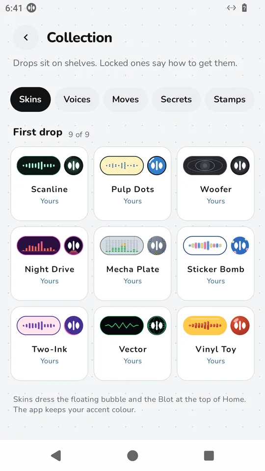
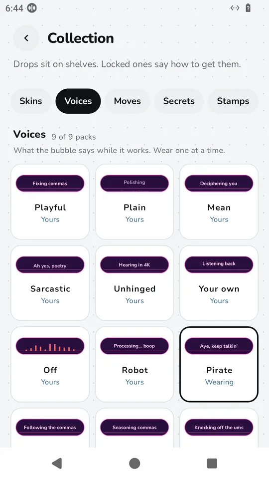

Skins, voices, moves and accents
Make KisuKisu yours.
Skins
Nine skins in the first drop. Each one is a full look for the listening pill and the bubble.



Voices, moves and secrets
Voices
While it works, the bubble shows a few words. Keep them playful or plain, let them be mean, sarcastic or unhinged, or earn packs like Robot and Pirate. Write your own, or switch them off.
Moves
Little celebrations for big moments, like fireworks and a moonwalk.
Secrets
A few things to find on your own. We won't spoil them.

How you earn them
- Things to tryAdd a word to your dictionary, pick a personality, hold to talk, dictate in three different apps. Each one has a prize.
- Words and daysClimb the word ladder at 1,000, 5,000, 10,000, 25,000 and 50,000 words, and the days ladder at 3, 7, 14 and 30 days.
- Forgiving streaksA freeze each week, a one-time repair, and a calm restart if a streak ends.
Your past dictations count towards the word ladder. Everything is stored on the phone only.
Accent colours
Five accents for highlights and the floating bubble: steel blue, copper, sage, violet and rose. Open Settings → Accent. Skins keep the app's accent.
Questions
How do I get new skins?
You earn them by using KisuKisu: trying features from the Things to try list, building day streaks, and passing word counts. Open Your journey to see the next prize and how far away it is.
Do I have to pay for skins or voices?
No. They are free. There are no purchases in KisuKisu.
What happens if I miss a day?
Streaks are forgiving. You earn a freeze each week that is used for you, and there is a one-time repair if you slip. If a streak ends, the app shows your best and starts fresh with no guilt.
Do skins change the whole app?
No. A skin dresses the floating bubble and the Blot at the top of Home. The rest of the app keeps your accent colour.
Can I switch the status words off?
Yes. Pick a voice, write your own, or turn the words off in Settings → Status words.
How do I get KisuKisu?
KisuKisu is in closed testing on Google Play. Fill in the short form with the Google account you use in the Play Store. We add you, usually within a day, and you install it from Google Play.
Pick your look.
KisuKisu is in closed testing on Google Play. It's free. Android only for now.
- Fill in a short form with the Google account you use in the Play Store.
- We add you as a tester, usually within a day.
- Install KisuKisu from Google Play like any other app.